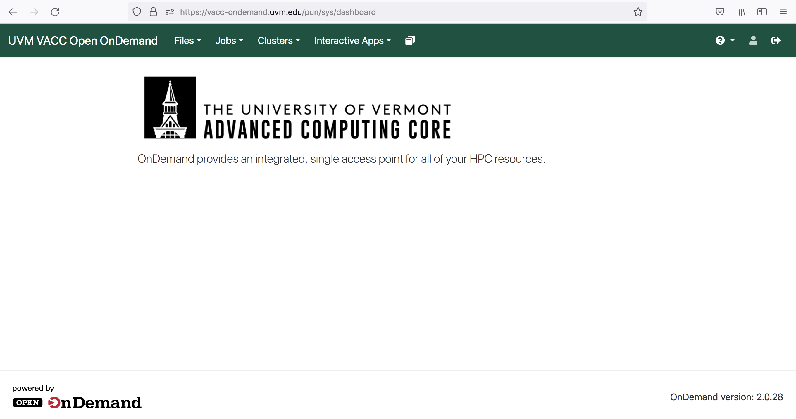
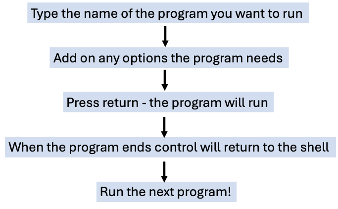
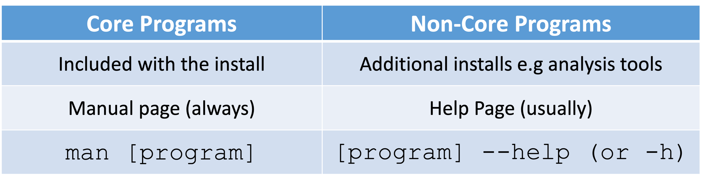

Learning Objectives for Today's Lesson
- Log in to the VACC, a high-performance computing (HPC) cluster.
- Learn basic command-line navigation.
- Copy data into your home directory.
- List files within a directory.
Introduction to Command Line
The command-line interface (CLI) and graphical user interface (GUI) are two different ways of interacting with a computer's operating system. Most people are familiar with the GUI, as it is the default interface for most software. In a GUI, you interact with visual representations of files, folders, applications, and other elements. In contrast, the CLI involves working primarily with text-based representations of files, folders, input, and output.

What is a Shell?
Most data processing and remote access will be command-line based. For this we need an interpreter.
A shell is a command-line interpreter that allows users to type commands to launch programs.
The most popular UNIX shell is BASH (the Bourne Again SHell) — so named because it is derived from a shell written by Stephen Bourne. Learning to use the shell requires time and effort.

While a GUI presents you with choices to select, CLI does not automatically display these options to you. Instead, you will need to learn specific commands. This will resemble learning a new language!
Benefits of Using the Shell
Using the shell provides access to internal system controls, remote servers, and customizable workflows through scripting. With the shell, you can create, edit, and delete files, as well as perform many other tasks efficiently.
The command line is often the easiest and most effective way to interact with remote machines and supercomputers. Familiarity with the shell is essential for running specialized tools and accessing high-performance computing (HPC) resources. As clusters and cloud computing systems become increasingly important for scientific data analysis, proficiency in the shell has become a critical skill. The command-line skills introduced here will enable you to address a wide range of scientific questions and computational challenges.
How to access the shell
On Mac or Linux machines, you can access the shell locally through a program called Terminal. However, for simplicity and convenience, we will use the shell through the open-source web portal Vermont Advanced Computing Center - Open OnDemand (VACC-OOD). Once you open the terminal, you will begin learning the basics of shell programming with the Bourne Again Shell (Bash).
Working with Remote Machines: Vermont Advance Computing Center Cluster (VACC)
Why work on the VACC?
Most data-processing tasks in bioinformatics require more computing power than we have on our workstations. For all bioinformatics projects performed in this course, you will work over a network connection with the VACC.
Cluster Basics

Nodes are generally classified by their roles: login nodes and compute nodes. Login nodes are used for accessing the cluster, setting up jobs, and managing workflows, while compute nodes handle the actual computational analysis or work. Most clusters have a few login nodes and many compute nodes to efficiently handle diverse workloads.
Common characteristics of a Cluster:
- Large memory
- Storage shared across nodes
- High speed interconnection network; suitable for high-throughput applications
- Shared by many users
As of March 2022, the VACC provides three Clusters:
- BlackDiamond
- Bluemoon
- DeepGreen
Please note that more information can always be found at the Vermont Advanced Computing Center website.
Connecting to the VACC
VACC-OOD Overview
Each student has been provided with their own personal VACC account that they can use to access VACC-Open OnDemand (OOD).
What is Open OnDemand (OOD)?
Open OnDemand (OOD) is an open source web portal for high performance computing (HPC) that provides users with an easy-to-use web interface to HPC clusters.
Benefits of using OOD:
-
Web-based, no additional software needs to be installed on your local machine
-
The easiest way to run graphical user interface (GUI) applications remotely on a cluster
-
Typical computing with command-line requires a high learning curve whereas OOD is easy to use and simple to learn
GUI applications offered by VACC-OOD:
- Equipped with Terminal: this is used to perform tasks on the command line (shell), both locally and on remote machines.

- RStudio: an integrated development environment for R
How to log-in to VACC-OOD:
-
Use the VACC-OOD link to access the site
-
Add your UVM netid and password
-
You should be viewing the following dashboard

-
To access the Terminal Go to and click
>_VACC Shell Access
Additional Information about VACC-OOD
More information about VACC-OOD usage can be found here VACC_OOD-start-guide
Connecting to VACC with SSH
If you already had a VACC account and/or are currently working towards generating and analyzing your own data, you may want to learn to log-in without VACC-OOD.
To do so, first open your terminal locally on your computer.

Once you open your terminal, your screen should look similar to below:
You see the "$" symbol?
That is where you write the "commands" that will be executed by shell (bash in this case) and your computer's kernel.
The "$" is called the "command prompt".
What is SSH?
There are many ways to connect to another machine over a network, but by far the most common is through the secure shell (SSH). We use SSH because its encrypted. This makes it secure to send passwords and edit private data files.
Step-by-step instructions:
Step by step instructions can be found here at the VACC_start_guide
Using VACC-OOD OFF-campus
To use OFF-campus you will need to VPN first. See install-cisco-vpn for more information!
Running Programs
Now that we are logged-in to the VACC, lets explore terminal. Your screen should look similar to the following:

To run a program, we will follow these basic steps: 
The "$" is called the "command prompt".

The command prompt on VACC will have some characters before the $,
something like [username@vacc-user1 ~], this is telling you your
username and the name of the login node you have connected to.
The dollar sign is a prompt which shows us that the shell is waiting for input. Moving forward, when typing commands, either from these lessons or from other sources, do not type in the command prompt $, only the command that follows it.
The first thing to do is to check if there are any files in the data
folder we are currently in. When you log in to a cluster, you will land
within a folder designated specifically for your use, and is referred to
as your "home directory". We will begin by listing the contents of our home directory using a command called ls.
ls
Tip -
lsstands for "list" and it lists the contents of a directory.
First let's remove this directory from last semester:
rm -r unix_lesson
Now let's bring in a data folder from a different location on the
cluster to our home directory by using the cp command. Copy and
paste the following command all the way from cp and including the
period symbol at the end .
cp -r /gpfs1/cl/mmg3320/course_materials/tutorials/unit1_unix .
Let's break this down.
'cp' is the command for copy. This command required you to specify the location of the item you want to copy (/gpfs1/cl/mmg3320/course_materials/tutorials/unit1_unix) and the location of the destination (.); please note the space between the two in the command. The “-r†is an option that modifies the copy command to do something slightly different than usual. The "." means "here", i.e. the destination location is where you currently are.
Now, you should see "unit1_unix" show up as the output of ls. This is
a folder we should all have in our home directory.
ls
Listing contents of data folder
Let's look at what is inside the folder "unit1_unix" and explore this further. We are use to clicking on a folder name to open it, however, now we are forced to change our mindset and open a folder or "directory" differently within the shell environment.
To look inside the unit1_unix directory, we need to change which
directory we are in. To do this we can use the cd command, which
stands for "change directory".
cd unit1_unix
Notice the change in your command prompt. The "~" symbol from before
should have been replaced by the string unit1_unix. This means that
our cd command ran successfully and we are now in the new directory.
Let's see what is in here by listing the contents:
ls
You should see:
## genomics_data other raw_fastq README.txt reference_data
Notice that ls has printed the name of the files and directories in
the current directory in alphabetical order, arranged neatly into
columns.
Arguments
There are five items listed when you run ls, but how do you know if
these are files or directories with more items inside?
To answer this question, we can modify the default behavior of ls by
adding an "argument" to get more information.
ls -F
## genomics_data/ other/ raw_fastq/ README.txt reference_data/
Anything with a "/" after its name is a directory. Things with an asterisk "*" after them are programs. If there are no "decorations" after the name, it's a normal text file.
Each line of output represents a file or a directory. The directory
lines start with d.
How to get more information on Arguments
Most commands will take additional arguments that control their
behavior. How do we know what arguments are available for a particular
command? The most commonly used shell commands have a manual available
that can be accessed using the man command. Let's try this command
with ls:
man ls

This will open the manual page for ls and you will lose the command
prompt. It will bring you to a so-called "buffer" page, a page you can
navigate with your mouse or if you want to use your keyboard we have
listed some basic key strokes:
- 'spacebar' to go forward
- 'b' to go backward
- Up or down arrows to go forward or backward, respectively
To get out of the man "buffer" page and to be able to type commands
again on the command prompt, press the q key!
Class Exercise
Use the -l option for the ls command to display more information
for each item in the unit1_unix folder. What additional information
is provided that you didn't see with the bare ls command?

Summary of Commands
cd
+ Change Directory
+ used to move throughout the filesystem of a computer
ls
+ List
+ list the contents of a directory
rm
+ Remove
+ used to remove a file
Citation
This lesson has been developed by members of the teaching team at the Harvard Chan Bioinformatics Core (HBC). These are open access materials distributed under the terms of the Creative Commons Attribution license (CC BY 4.0), which permits unrestricted use, distribution, and reproduction in any medium, provided the original author and source are credited.
- The materials used in this lesson were derived from work that is Copyright © Data Carpentry (http://datacarpentry.org/). All Data Carpentry instructional material is made available under the Creative Commons Attribution license (CC BY 4.0). * Adapted from the lesson by Tracy Teal. Original contributors: Paul Wilson, Milad Fatenejad, Sasha Wood and Radhika Khetani for Software Carpentry (http://software-carpentry.org/) authors: Sheldon McKay, Mary Piper, Radhika Khetani, Meeta Mistry, Jihe Liu date posted: September 28, 2020
*Other parts of this lesson were derived from:
-
Erin Alison Becker, Anita Schürch, Tracy Teal, Sheldon John McKay, Jessica Elizabeth Mizzi, François Michonneau, et al. (2019, June). datacarpentry/shell-genomics: Data Carpentry: Introduction to the shell for genomics data, June 2019 (Version v2019.06.1). Zenodo. http://doi.org/10.5281/zenodo.3260560
-
Babraham Bioinformatics - Training Courses. (n.d.). https://www.bioinformatics.babraham.ac.uk/training.html#unix